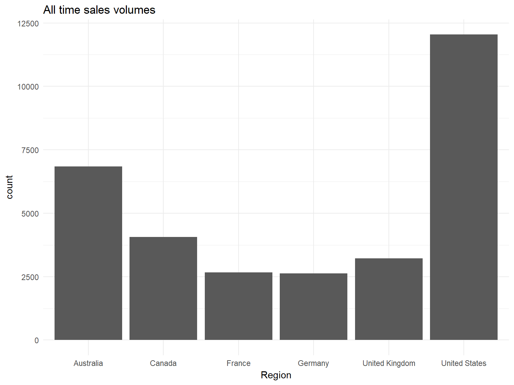
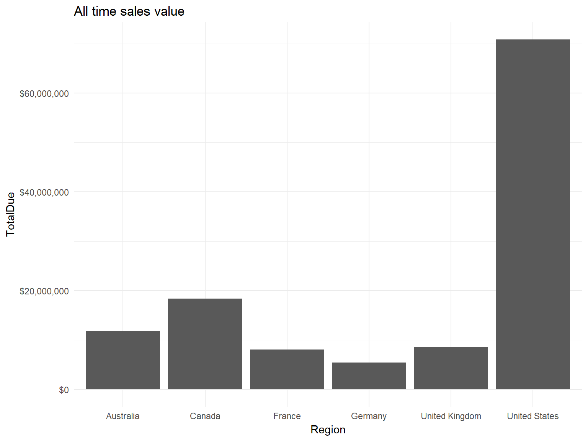
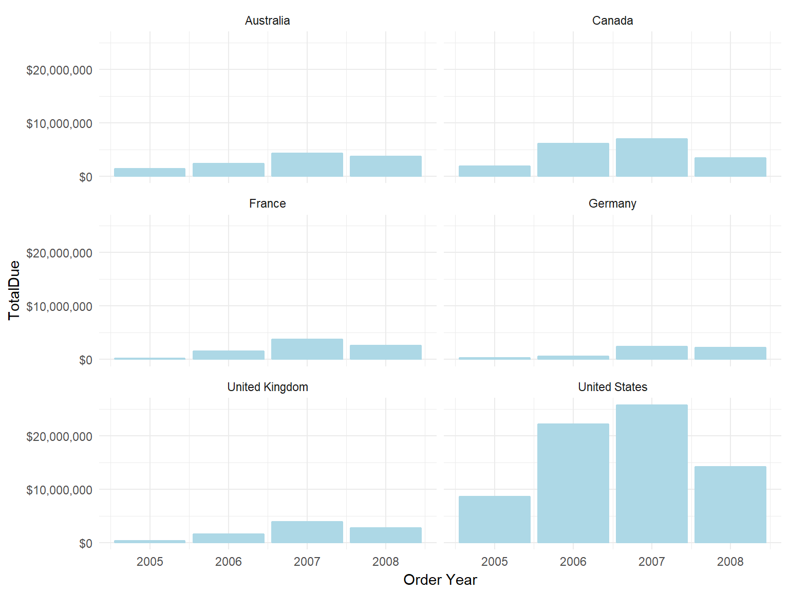

Intro to R
Steph Locke
2017-09-06
Objective
Learn about R and do useful day-job stuff with it
Sub-objectives
- Install R
- Connect to database using
RODBC - Manipulate and summarise data using
data.table - Visualise your data using
ggplot2 - Present your data using
rmarkdownandknitr - Produce a report using
shiny
Scenario

I’ve heard about this new thing called R. Apparently everyone’s using it so we need to. Make me something using it, by tomorrow!
Step 1: Google “What is R?”
I Google frantically and find out…
- R (birthed out of S) has been around for ages
- Has massively increased in popularity
- Lots of big players like SAP, TIBCO, and Oracle have implemented it
- Microsoft are catching up quick!
- It’s statistician heaven
- It produces very pretty charts
- Huh, you can make XKCD cartoons in it?
Eep, but I’m not a stats bod or a programmer, what will I do? Do my usual stuff, but swisher!
Step 2: Get R installed
OK, I need to get this thing called R installed on my laptop!
- Install R from r-project.org myself
- Jump on IT’s desk until they install Rstudio via Rstudio.com for me
- Use R to nab some useful packages
install.packages(c(
"RODBC", # Database access
"data.table", # Table manipulation
"ggplot2", # Charting
"scales", # Scale manipulations
"rmarkdown", # Presentation writing
"knitr", # Presentation production
"shiny" # Reporting
))Step 3: Connect to the database
I’ll report on global bike sales from our company’s database
- Database provided by Redgate, hosted on Azure
- Use your relevant driver (often the one you’ll use in Excel) data
- You can also connect to hundreds of other data stores like Excel
Establishing a connection
# Getting data
library("RODBC")
# Manipulating data
library("data.table")
# Build a connection to the DB for reuse
# Driver names can vary eg
# {ODBC Driver 11 for SQL Server}
azure <- odbcDriverConnect(
"Driver={SQL Server Native Client 11.0};
Server=mhknbn2kdz.database.windows.net;
Database=AdventureWorks2012;
Uid=sqlfamily;
Pwd=sqlf@m1ly;")Getting our starting data
Order <- data.table( sqlQuery( azure,
"SELECT * FROM [Sales].[SalesOrderHeader]"))
Territory<- data.table( sqlQuery( azure,
"SELECT * FROM [Sales].[SalesTerritory]"))
Region <- data.table( sqlQuery( azure,
"SELECT * FROM [Person].[CountryRegion]"))Step 4: Create big dataset
Hmm, I need to put all the data into a “flat-file” view
DT[i, j, by]
DT[WHERE | JOIN | ORDER ,
SELECT | UPDATE ,
GROUP][...]- Set “primary keys” with
setkey - Join in format
Y[X]to join Y on to X
Join Territory to the Order
# Specify the columns to join by
setkey(Order , TerritoryID)
setkey(Territory , TerritoryID)
# Reads as join Territory to the Order table
# Seperate table so we don't have to start again
OrderTerritory <- Territory[Order]Join Region to the OrderTerritory
# Specify the columns to join by
setkey(OrderTerritory , CountryRegionCode)
setkey(Region , CountryRegionCode)
# Reads as join Region to the OrderTerritory table
# Will overwrite as it's our desired state
OrderTerritory <- Region[OrderTerritory]Step 5: Summarise data
OK, let’s produce some tables!
- Lots of functionality, but kept quite simple here
- Read data.table intro for a great in-depth introduction
Basic summary
OrderTerritory[ , #Nothing in 1st position
.( Value = sum(TotalDue) ,
Volume = .N ), # Aggregations
by = Name # Group by, no alias
]Basic summary
| Name | Value | Volume |
|---|---|---|
| Australia | 5985718 | 3419 |
| Canada | 8465891 | 2049 |
| Germany | 2660008 | 1296 |
| France | 4042225 | 1362 |
| United Kingdom | 4119535 | 1610 |
| United States | 35057232 | 5996 |
Top 5 sales ever
OrderTerritory[order(-TotalDue)[1:5],
# Picks first 5 rows of TotalDue desc
.( SalesOrderNumber, # multi-select
AccountNumber,
Region=Name, # Aliasing colum
TotalDue,
OrderDate
)
]Top 5 sales ever
| SalesOrderNumber | AccountNumber | Region | TotalDue | OrderDate |
|---|---|---|---|---|
| SO3737 | 10-4020-000072 | United States | 165028.7 | 2006-09-01 |
| SO3711 | 10-4020-000239 | United States | 158056.5 | 2006-09-01 |
| SO3697 | 10-4020-000024 | United States | 145741.9 | 2006-09-01 |
| SO8164 | 10-4020-000546 | United States | 145454.4 | 2007-08-01 |
| SO13492 | 10-4020-000085 | France | 137721.3 | 2007-11-01 |
Top sale ever for each region
OrderTerritory[ ,
.SD[which.max(TotalDue),
# .SD is subset of rows within group
# which.max() returns row
# no of largest val
.( SalesOrderNumber,
AccountNumber,
TotalDue,
OrderDate
)
],
by=.(Region=Name)
#Aliasing in groupung
]Top sale ever for each region
| Region | SalesOrderNumber | AccountNumber | TotalDue | OrderDate |
|---|---|---|---|---|
| Australia | SO9908 | 10-4020-000015 | 71729.86 | 2007-09-01 |
| Canada | SO2949 | 10-4020-000227 | 135606.68 | 2006-07-01 |
| Germany | SO11596 | 10-4020-000302 | 117506.12 | 2007-10-01 |
| France | SO13492 | 10-4020-000085 | 137721.31 | 2007-11-01 |
| United Kingdom | SO9915 | 10-4020-000502 | 130249.26 | 2007-09-01 |
| United States | SO3737 | 10-4020-000072 | 165028.75 | 2006-09-01 |
Step 6: Make some charts
I need to make some pretties!
- Using
ggplot2as much easier than base graphics - Simple structure = chart(data, axis & series) + chart types + formatting
- No secondary axes as considered bad visualisation, use
optiRum::multiplot() - Easy trellis / small multiple charts
Basic chart – volumes
library(ggplot2)
ggplot(OrderTerritory # dataset
,aes(x=Name, y=..count..))+ # values
geom_bar()+ # chart type
theme_minimal()+ # themeing
labs(x="Region",title="All time sales volumes")Basic chart – volumes

Basic chart – value
library(scales)
ggplot(OrderTerritory
,aes(x=Name, y=TotalDue))+
geom_bar(stat="identity")+ # use value
theme_minimal()+
scale_y_continuous(label=dollar)+ # customisation
labs(x="Region",title="All time sales value")Basic chart – value

Trellis chart – value
ggplot(OrderTerritory
,aes(x=year(OrderDate), y=TotalDue,
colour=Name))+
geom_bar(stat="identity")+
theme_minimal()+
scale_y_continuous(label=dollar)+
facet_wrap(~Name,ncol = 2) + # trellis
xlab("Order Year")Trellis chart – value

Step 7: Produce presentation
I need a slide deck for the boss to take use!
- Use
rmarkdownto produceSamplePresentation.Rmd - Really light syntax, same as Stack Overflow
- Customisable via CSS
- Create slides (html or PDF) or docs (html, PDF, Word)
- Use a modular design
- Re-knit to get latest data
Step 8: Produce report
I need a report for people to play with
- Use
shinyto produce interactive online reports - Can host locally (for other R users)
- Can use a server (for internal users, uses Linux)
- Can use a hosting platform like shinyapps.io
library("shiny")
#Run the shiny app (app.R) in the current folder
runApp(".")Conclusion
Phew, he’s got something to show to the Board & a web page he can play with all day long.
We learnt along the way:
- connect to our data using
RODBC - manipulate it with
data.table - chart it with
ggplot2 - make documents with
rmarkdown - produce interactive reports using
shiny
Not bad for a day’s work!
Where next?
OK, some basics covered but where to go from here? (F= Free, *=Discount, HO=Hands on)
Online
- Modern R DataCamp
F/* HO - Statistics R Coursera
F HO - R-bloggers
F - Advanced R programming
F - Writing R packages
F
In-person
- R user groups
F - Training courses
* - Conferences e.g. SQL Relay
F HO
Get this presentation
This presentation is available on github.com/stephlocke/Rtraining. All the code is available for you to take a copy and play with to help you learn on the go.
If you have any questions, contact me!